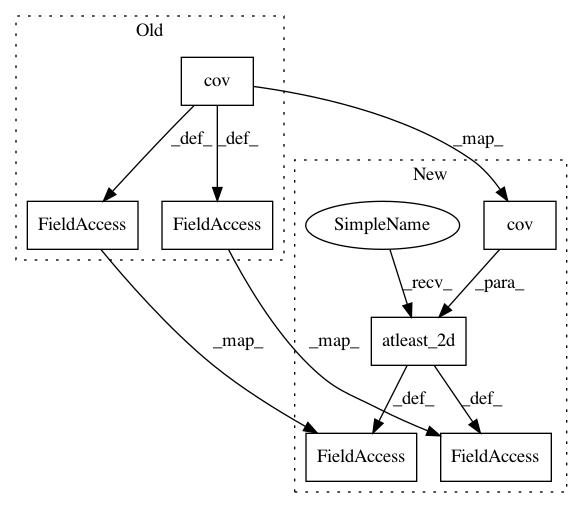

d3620bbb13620338cc8aaf39d78cead58ac5d410,metric_learn/rca.py,RCA,fit,#RCA#Any#Any#,90
Before Change
chunks = np.asanyarray(chunks, dtype=int)
chunk_mask, chunked_data = _chunk_mean_centering(X_t, chunks)
inner_cov = np.cov(chunked_data, rowvar=0, bias=1)
dim = self._check_dimension(np.linalg.matrix_rank(inner_cov), X_t)
// Fisher Linear Discriminant projection
if dim < X_t.shape[1]:
total_cov = np.cov(X_t[chunk_mask], rowvar=0)
tmp = np.linalg.lstsq(total_cov, inner_cov)[0]
vals, vecs = np.linalg.eig(tmp)
inds = np.argsort(vals)[:dim]
A = vecs[:, inds]
inner_cov = A.T.dot(inner_cov).dot(A)
self.transformer_ = _inv_sqrtm(inner_cov).dot(A.T)
else:
self.transformer_ = _inv_sqrtm(inner_cov).T
if M_pca is not None:
self.transformer_ = self.transformer_.dot(M_pca)
return self
After Change
chunks = np.asanyarray(chunks, dtype=int)
chunk_mask, chunked_data = _chunk_mean_centering(X_t, chunks)
inner_cov = np.atleast_2d(np.cov(chunked_data, rowvar=0, bias=1))
dim = self._check_dimension(np.linalg.matrix_rank(inner_cov), X_t)
// Fisher Linear Discriminant projection
if dim < X_t.shape[1]:
total_cov = np.cov(X_t[chunk_mask], rowvar=0)
tmp = np.linalg.lstsq(total_cov, inner_cov)[0]
vals, vecs = np.linalg.eig(tmp)
inds = np.argsort(vals)[:dim]
A = vecs[:, inds]
inner_cov = np.atleast_2d(A.T.dot(inner_cov).dot(A))
self.transformer_ = _inv_sqrtm(inner_cov).dot(A.T)
else:
self.transformer_ = _inv_sqrtm(inner_cov).T
if M_pca is not None:
self.transformer_ = np.atleast_2d(self.transformer_.dot(M_pca))
return self
In pattern: SUPERPATTERN
Frequency: 3
Non-data size: 7
Instances
Project Name: metric-learn/metric-learn
Commit Name: d3620bbb13620338cc8aaf39d78cead58ac5d410
Time: 2019-01-29
Author: 31916524+wdevazelhes@users.noreply.github.com
File Name: metric_learn/rca.py
Class Name: RCA
Method Name: fit
Project Name: metric-learn/metric-learn
Commit Name: c1c2b1408098c92d8c8839692720ffc59563ff10
Time: 2017-08-03
Author: perimosocordiae@gmail.com
File Name: metric_learn/lsml.py
Class Name: LSML
Method Name: _prepare_inputs
Project Name: metric-learn/metric-learn
Commit Name: d3620bbb13620338cc8aaf39d78cead58ac5d410
Time: 2019-01-29
Author: 31916524+wdevazelhes@users.noreply.github.com
File Name: metric_learn/sdml.py
Class Name: _BaseSDML
Method Name: _fit